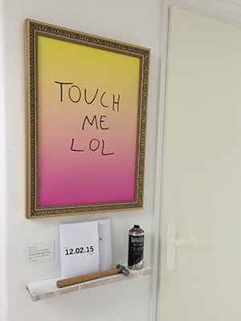
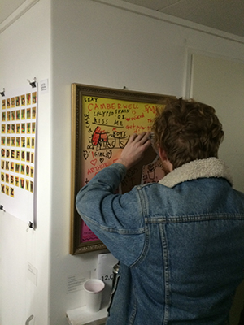
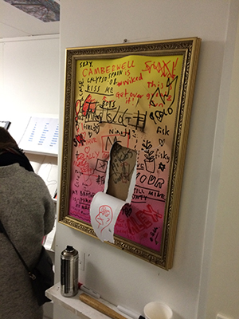

-
Dissertation
The ideas were first explored in a written essay. The context was much wider, and it looked at how we display art, interact with it and assess it.
It also set guides for this project. Galleries should not be showing old work; museums and the Internet should. Art should involve us more. We must be able to play with, destroy and change modify the original message. Art is not permanent and it is stricly bound to place and time.
-
Customer Care
All of these stem from rules. With audiences not reacting, they have no power on deciding on what good art is, leaving the power to critics and a price tag. This short film, called Customer Care, explores rules outside of the gallery. It subtly raises questions on rules in a society and the consequences of breaking the status quo.
-
Interim Show
The goal of the project is now to imagine an art space that does not dictate how to interact with it. Its first iteration was tested at The Artworks in Elephant & Castle. The piece encouraged the audience to react by showing a framed print with a hand-written TOUCH ME LOL on it and by installing a shelf with tools below.
To be more successful, the show has to take place in a more controlled environment. Visitors must be in the gallery alone, they must feel comfortable and they must be free of any concepts of value and preciousness of the work. The reaction must be honest and uninhibited.



-
Call for Artists
10 pieces of work are needed. Physical pieces that are contemporary, provoking, and designed to ignite a reaction in an audience that is not art informed.
All participants will receive a copy of the book that will be one of the final outcomes and will receive their work back, with a volunteer's reaction on it.
-
Call for Volunteers
Each volunteer will be presented with a set of tools in the middle of the room upon arrival. Chosen artworks will be displayed in the room, and the volunteers will get to pick one that strikes them the most. They will then react.
All participants will receive a copy of the book that will be one of the final outcomes.
-
-
The Experiment
The experiment will take place on the 29th of April at The Hotel Elephant in Borough.
The show will take place in a more controlled environment. Volunteers will be in the space alone. They must feel comfortable and they must be free of any concepts of value and preciousness of the work.
This, together with appropriate curation of the artworks, will ignite a desirable response.
-
Private View
In the evening of the 29th of April, there will be a chance to see all the pieces and talk to all the artists and volunteers involved.
-
Degree Show
The degree show in Camberwell College of Arts will be displaying one of the outcomes from the show as well as a book that documents all the work and reflects on the project.